АМКОДОР 320, АМКОДОР 320Е
АМКОДОР 320СЕ
АМКОДОР 325С
АМКОДОР 325С-01
АМКОДОР 330СЕ
АМКОДОР 332С4
АМКОДОР 332С4-01
АМКОДОР 342С4
АМКОДОР 352С
АМКОДОР 352С-02
АМКОДОР 371АС
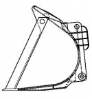
| Ковш 320.45.01.000-В | |
|---|---|
| Без зубьев. Входит в состав машины. | |
| Номинальная вместимость, м³ | 1.1 |
| Удельная масса погружаемого материала, т/м³ | 1.82 |
| Ширина, мм | 2100 |
| Высота разгрузки (при угле разгрузки 45°), мм | 2600 |
| Вылет ковша (при угле разгрузки 45°), мм | 880 |
| Минимальнаый радиус поворота по наружному габариту в транспортном положении, мм | 4800 |
| Габаритная длина машины в транспортном положении, мм | 6000 |
| Масса, кг | 350 |
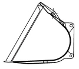
| Ковш зерновой 320.45.02.000 | |
|---|---|
| Без зубьев. | |
| Номинальная вместимость, м³ | 1.9 |
| Удельная масса погружаемого материала, т/м³ | 0.71 |
| Ширина, мм | 2300 |
| Высота разгрузки (при угле разгрузки 25°), мм | 2750 |
| Высота разгрузки (при угле разгрузки 45°), мм | 2350 |
| Вылет ковша (при угле разгрузки 45°), мм | 1250 |
| Минимальнаый радиус поворота по наружному габариту в транспортном положении, мм | 4900 |
| Габаритная длина машины в транспортном положении, мм | 6250 |
| Масса, кг | 425 |
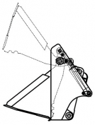
| Ковш двухчелюстной 320.45.03.000-А | |
|---|---|
| Без зубьев. | |
| Номинальная вместимость, м³ | 0.85 |
| Удельная масса погружаемого материала, т/м³ | 2.35 |
| Ширина, мм | 2170 |
| Высота разгрузки (при угле разгрузки 43°), мм | 2690 |
| Вылет ковша (при угле разгрузки 43°), мм | 860 |
| Минимальнаый радиус поворота по наружному габариту в транспортном положении, мм | 4900 |
| Габаритная длина машины в транспортном положении, мм | 5970 |
| Масса, кг | 480 |
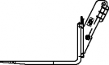
| Вилы грузовые 525.58.00.000 | |
|---|---|
| Грузоподъемность, т | 2 |
| Ширина по опорным лапам, мм | 270-990 |
| Шаг перемещения лап, мм | 40 |
| Высота разгрузки, мм | 2900 |
| Вылет по кромке вил, мм | 1600 |
| Минимальнаый радиус поворота по наружному габариту в транспортном положении, мм | 4500 |
| Габаритная длина машины в транспортном положении, мм | 6630 |
| Масса, кг | 300 |
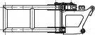
| Захват для рулонов 527.53.00.000 – Б1 | |
|---|---|
| Грузоподъемность, т | 1.2 |
| Диаметр рулона, мм | 850 - 1750 |
| Ширина, мм | 1360 |
| Высота разгрузки рулона, мм | 3250 |
| Вылет при горизонтальном положении лап захвата на максимальной высоте подъема, мм | 1800 |
| Минимальнаый радиус поворота по наружному габариту в транспортном положении, мм | 4500 |
| Габаритная длина машины в транспортном положении, мм | 6810 |
| Масса, кг | 340 |
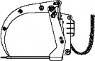
| Вилы с захватом 527.54.00.000 | |
|---|---|
| Грузоподъемность, т | 1.5 |
| Ширина, мм | 2090 |
| Вылет штыря вил от края переднего колеса при максимальной высоте разгрузки и при углу разгрузки 45°, мм | 980 |
| Минимальнаый радиус поворота по наружному габариту в транспортном положении, мм | 4800 |
| Габаритная длина машины в транспортном положении, мм | 6200 |
| Масса, кг | 560 |
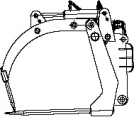
| Вилы универсальные 527.55.00.000 | |
|---|---|
| Грузоподъемность, т | 1.3 |
| Ширина, мм | 2150 |
| Высота разгрузки, мм | 2450 |
| Вылет штыря вил от края переднего колеса, мм | 980 |
| Минимальнаый радиус поворота по наружному габариту в транспортном положении, мм | 4800 |
| Габаритная длина машины в транспортном положении, мм | 6200 |
| Масса, кг | 600 |
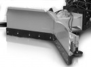
| Установка отвала для снега "Pronar" 320.45.62.000 | |
|---|---|
| Ширина очищаемой полосы, мм | 2530 |
| Высота отвала, мм | 835 |
| Ширина отвала в транспортном положении, мм | 2460 |
| Минимальнаый радиус поворота по наружному габариту в транспортном положении, мм | 5200 |
| Габаритная длина машины в транспортном положении, мм | 6070 |
| Масса, кг | 640 |
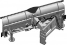
| Отвал V-образный для снега 320.45.63.000 | |
|---|---|
| Система поворота отвала | Гидравлическая |
| Угол поворота крыльев отвала, град | ±30 |
| Минимальнаый радиус поворота по наружному габариту в транспортном положении, мм | 5000 |
| Ширина очищаемой полосы (при положении прямо/повернуто клином ±30°), мм | 2720/2360 |
| Высота отвала, мм | 835 |
| Габаритная длина машины в транспортном положении (отвал повернут клином ±30°), мм | 6060 |
| Масса, кг | 720 |
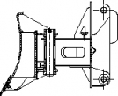
| Отвал поворотный 320.45.65.000 | |
|---|---|
| Минимальнаый радиус поворота по наружному габариту в транспортном положении, мм | 4800 |
| Ширина (при положении прямо/повернут на ±30°), мм | 2500/2170 |
| Высота отвала, мм | 750 |
| Угол поворота, град | ±30 |
| Габаритная длина машины в транспортном положении (отвал повернут клином ±30°), мм | 5920 |
| Масса, кг | 540 |
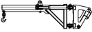
| Стрела крановая поворотная 320.45.71.000 | |
|---|---|
| Номинальная грузоподъемность, кг:
при минимальном вылете крюка (А) при максимальном вылете крюка (В) |
1260 930 |
| Максимальная высота подъема крюка в положении А/В, мм | 3900/4000 |
| Высота подъема крюка при горизонтальном положении стрелы, мм | 1800 |
| Вылет крюка в положении А/В, мм:
при горизонтальном положении стрелы при максимальном подъеме стрелы |
1100/2100 2150/3100 |
| Минимальнаый радиус поворота по наружному габариту в транспортном положении, мм | 4700 |
| Габаритная длина машины в транспортном положении, мм | 7600 |
| Масса, кг | 400 |
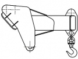
| Крюк грузовой 527.56.00.000 | |
|---|---|
| Грузоподъемность, т | 2 |
| Максимальная высота подъема крюка при максимальном подъеме стрелы, мм | 3420 |
| Максимальная высота подъема крюка при горизонтальном положении стрелы, мм | 1650 |
| Вылет крюка при максимальном подъеме стрелы, мм | 900 |
| Вылет крюка при горизонтальном положении стрелы, мм | 1750 |
| Минимальнаый радиус поворота по наружному габариту в транспортном положении, мм | 4300 |
| Габаритная длина машины в транспортном положении, мм | 5790 |
| Масса, кг | 125 |
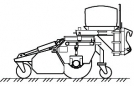
| Установка подметально-уборочного оборудования "Tuchel" 320.45.82.000 | |
|---|---|
| Ширина очищаемой полосы (с выдвинутой боковой метлой), мм | 2400 |
| Диаметр основной щетки, мм | 600 |
| Минимальнаый радиус поворота по наружному габариту в транспортном положении, мм | 5600 |
| Габаритная длина машины в транспортном положении, мм | 7590 |
| Масса, кг | 715 |
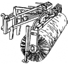
| Установка подметально-уборочного оборудования "Holms" 320.45.83.000 | |
|---|---|
| Ширина очищаемой полосы, мм:
щетка в прямом положении щетка в повернутом положении на 30° |
2500 2215 |
| Диаметр щетки, мм | 700 |
| Минимальнаый радиус поворота по наружному габариту в транспортном положении, мм | 5400 |
| Габаритная длина машины в транспортном положении (щетка в прямом положении), мм | 6920 |
| Масса, кг | 500 |
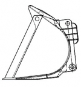
| Ковш 320С.45.01.000-01-В | |
|---|---|
| Номинальная вместимость: V=1,1 м³, зубья на болтах |
| Вилы для рулонов 320С.45.44.000 |
|---|

| Ковш 320СЕ.45.01.000 | |
|---|---|
| Номинальная вместимость: V=1,1 м³, без зубьев, входит в состав машины |

| Ковш 320СЕ.45.01.000-01 | |
|---|---|
| Номинальная вместимость: V=1,1 м³, зубья на болтах |
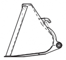
| Ковш зерновой 320С.45.02.000 | |
|---|---|
| Номинальная вместимость: V=2 м³, без зубьев |
| Ковш двухчелюстный 320С.45.03.000 | |
|---|---|
| Номинальная вместимость: V=1 м³, без зубьев |
| Ковш двухчелюстный 320С.45.03.000-01 | |
|---|---|
| Номинальная вместимость: V=1 м³, зубья на болтах |
| Ковш для корнеплодов 320С.45.04.000 | |
|---|---|
| Номинальная вместимость: V=2,1 м³ |
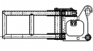
| Захват для рулонов 320С.45.24.000 |
|---|
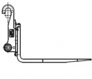
| Вилы грузовые 320С.45.43.000 |
|---|
| Вилы с захватом 320С.45.45.000 |
|---|
| Вилы универсальные 320С.45.46.000 |
|---|
| Установка отвала для снега "PRONAR" 320С.45.62.000 |
|---|
| Установка подметально-уборочного оборудования "Holms" 320C.45.82.000 |
|---|
3
4
5
6
7
8
9
10